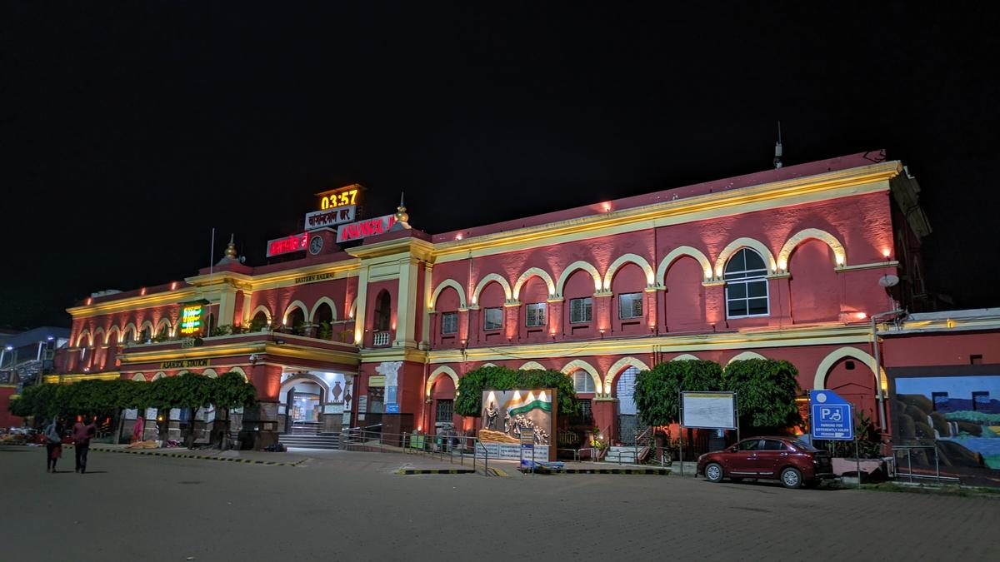
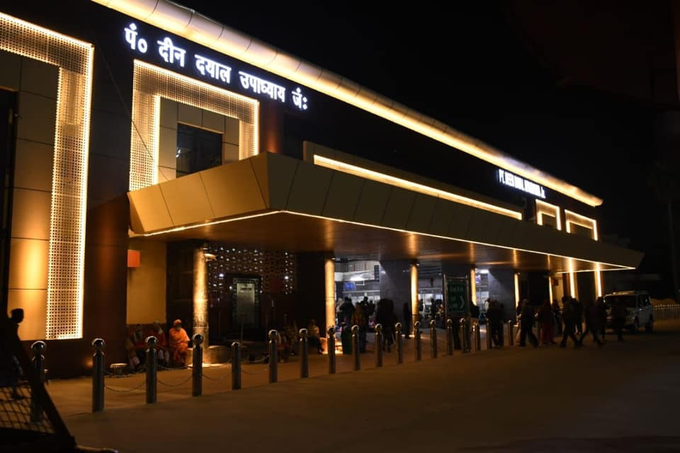
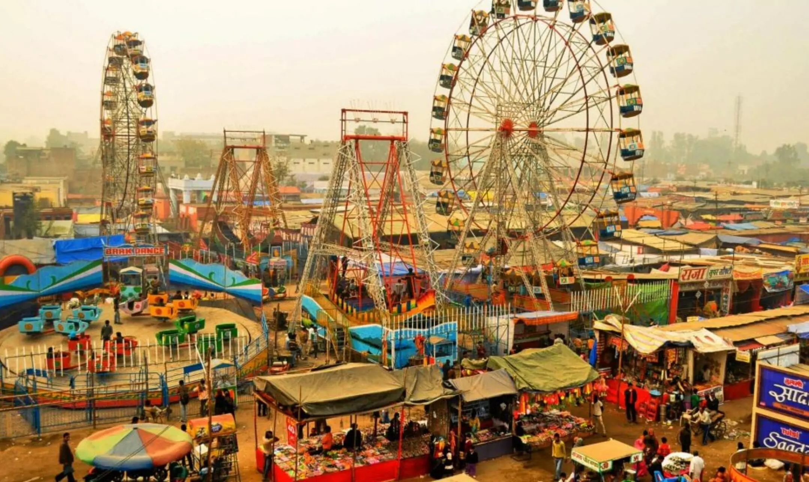

DHANBAD DIVISION
Adra division spreads over 3 districts of West Bengal viz. Bankura, Purulia & West Midnapur and 2 districts of Jharkhand viz. Saraikela and Bokaro having a route km of 732.503

PT. DEEN DYAL UPADHAYAY DIVISION
Chakradharpur division spreads over 4 districts of Orissa viz. Mayurbhanj, Keonjhar, Jharsuguda and Sambalpur having a route km of 758.3.

SAMASTIPUR DIVISION
Kharagpur division spreads over 3 districts of West Bengal viz. Howrah, Midnapore East and West, one district of Jharkhand viz., East Singhbhum and 3 districts of Orissa viz., Balasore, Mayurbhanj and Bhadrak. Route km of 2011.

SONPUR DIVISION
Ranchi division spreads over 7 districts of Jharkhand viz., Ranchi, Lohardaga, Gumla, Simdega, Khunti, Ramgarh and Saraikela-Kharsawan and Purulia district of West Bengal. Route km is 441.94.